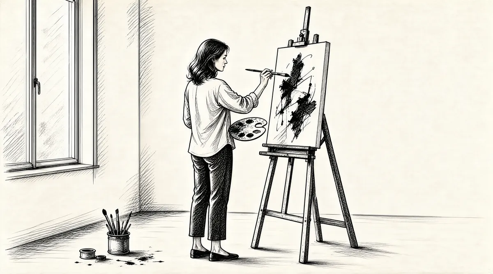

第41章 然后呢？

苏珊的朋友们会说，她自己选择了分居生活，她用这种方式来回应沃伦的执迷。正如一个朋友所说，“沃伦的真正结婚对象是伯克希尔–哈撒韦”。这个事实是无法回避的。然而，不论出现了多少问题，他们的婚姻一直没有破裂。也就是说，至少，在巴菲特所执迷的又一个目标——凯瑟琳·格雷厄姆出现之前一直是这样的。她的出现导致他们的关系降到了冰点，并且把苏珊推到了后台。正是此时，她才最终采取了行动。
现在，沃伦更多的时候是到纽约和华盛顿同格雷厄姆一起参加那些盛大的晚会，或者是她家里的聚会。尽管他有时感到尴尬，遭人讥笑，但是他仍然去见那些达官显贵，以及凯瑟琳的著名朋友和熟人，这使他大开眼界。“我见过杜鲁门·卡波特，”他说的是《蒂芙尼的早餐》和《冷血》的作者，他曾经以格雷厄姆的名义在纽约的广场饭店举办过黑白舞会；这一舞会后来被称为著名的“世纪派对”，卡波特深受国际上许多富家千金及社交名媛的青睐。
他来到她家，全身蜷缩在沙发上，用一种难以置信的腔调说话，但是他知道他们所有人的秘密。他真的很了解他们，因为他们都喜欢和他谈话，他十分精明，他真正喜欢的人就是凯瑟琳。和其他人不一样，我想他只是感觉她不像个骗子。
巴菲特甚至被前驻英大使沃尔特·安嫩伯格召见过，他拥有不少效益丰厚的公司，如三角出版社、《费城问讯者报》以及巴菲特小时候最喜欢的报纸《每日赛讯》。
“沃尔特在1977年的《华尔街日报》上读到过关于我的文章，然后他给我写了封信，信中叫我‘亲爱的巴菲特先生’，并且他邀请我到桑尼兰地区。”这是他在加州的庄园。从汤姆·墨菲和凯瑟琳·格雷厄姆口中巴菲特已经听说过这位大使，因此，他知道这个人十分敏感，很容易生气，不过这也激发了他的兴趣。安嫩伯格的父亲摩西·安嫩伯格有许多故事。除了把出版的兴趣遗传给儿子外，他也留给他臭名和耻辱——他曾经进过监狱，因为他经营的一家赛马电报公司涉嫌非法避税，该公司主要通过电报向全国各地的记者通报赛马结果。该公司可能和犯罪集团有牵连，因而他还背着串通匪徒的罪名。据报道，为了拯救儿子，使他免受起诉，摩西·安嫩伯格避重就轻地认了罪，他戴着卷边男毡帽和镣铐，自己一个人进了监狱。沃尔特称自己的父亲后来因脑瘤在圣玛丽医院去世，去世时形容枯槁，备受折磨，还留下了几句遗嘱：“我所遭受的一切都是为了让你成为一个真正的男子汉。”1无论这是真的还是编造的，沃尔特后来的行为表明他好像相信这是真的。
现在，沃尔特肩负着重振家族威望以及养活他母亲和姐妹的重担。他通过艰苦的努力学会了经营出版业，并且证明了自己是一个天才的企业家。他创办了《17》杂志，后来又创办了《电视指南》杂志，这是个十分聪明的创意，它满足了公众急于查看电视节目表、了解电视节目和明星的欲望。在他见到巴菲特时，他已经不仅仅在商业上取得了巨大的成功，而且由于理查德·尼克松任命他为驻英大使，他的社会地位和威望得到了极大的提高。然而，即使他后来恢复了自己的姓氏，他心中的伤痕一直都没有消失过。
巴菲特满怀好奇地来到桑尼兰地区去拜见安嫩伯格，两个人之前已经有过联系；沃尔特是埃·西蒙的哥哥，埃·西蒙是本·罗斯纳前合伙人里奥·西蒙的妻子，西蒙已经去世，她“被人宠坏了，完全被宠坏了”——罗斯纳欺骗的就是埃·西蒙，那时他已经把联合零售公司以低价卖给了巴菲特，因为她不再是他的合伙人了。巴菲特曾经见过她，并且在纽约她那所挂满了艺术品的公寓里受到了她的款待。女仆轻手轻脚地来来往往，托着银盘，盘上盛着黄瓜三明治；埃·西蒙向巴菲特谈起他的“爸爸”——摩西·安嫩伯格：有一次，他让手下那些打手，也就是那些臭名昭著的“男孩们”对着里奥开了几枪，为了改变他对自己的态度。她告诉巴菲特，在芝加哥密歇根大道的一个角落里的一面墙上仍能看到子弹打的坑。埃·西蒙接着请求让她的儿子加入巴菲特的合伙公司。沃伦“想到了那些子弹”，他认为如果他一年内没有什么好的收益的话，恐怕也会遭遇这种“待遇”。
她的哥哥沃尔特多年来一直致力于重塑家族的声誉，以消除人们脑海中密歇根大道子弹横飞的印象。桑尼兰地区是一片广阔富饶的绿洲，位于加州兰乔米拉奇的沙漠之中。在他的花园中，立着玛雅人太阳神的塑像和罗丹的青铜雕塑《夏娃》——她用手遮着娇羞的脸，矗立在水池中。在桑尼兰地区，安嫩伯格招待过查尔斯王子，举办过弗兰克·辛纳特拉的第四次婚礼，也曾经是理查德·尼克松的避风港，给了他和平和安宁，让他平静地写完了最后一篇国情咨文。
他彬彬有礼，十分庄重。我们走出去，来到后面的湖边，沃尔特坐下来。他衣着光鲜，好像所穿的衣服全都是那天早上刚买的一样。他那时大概70岁，而我大概是47岁。他说起话来语气和蔼，就像同一个他要帮助的年轻人谈话一样，‘巴菲特先生，你首先要理解，没有人喜欢被批评。’那是他同人相处的基本原则。
对巴菲特来说，这再容易不过了。“我说，‘是的，大使先生，我知道了，你不用担心这一点。’”
接着他开始谈论所谓的“珍品”。
“在世界上有三件东西，”他说，“可以称得上珍品，他们是《每日赛讯》、《电视指南》和《华尔街日报》，而我已经拥有了其中的两件。”
他所谓的“珍品”就是，即使是在大萧条期间，《每日赛讯》在古巴也可以卖2.5美元。
《每日赛讯》之所以可以这样，是因为人们没有办法从其他地方获得更好或者更完整的赛马信息。
它每天的发行量高达15万份，而它已经创刊大约50年了。它不只是价值两美元的商品，更是必需品。如果你十分关注赛马或者你是赛马的裁判员，那么你就需要《每日赛讯》。他想卖多少钱都可以，人们都会买的。从本质上来看，这就像把毒品卖给吸毒成瘾的人一样。
因此，每年沃尔特就会对着镜子说：“镜子，镜子，墙上的镜子，今年秋天《每日赛讯》要涨多少钱？”
而镜子总会说：“沃尔特，涨两毛五吧！”
那时候你用两毛五就可以买到整份的《纽约时报》或者《华盛顿邮报》。并且，巴菲特认为，《纽约时报》和《华盛顿邮报》都是很棒的公司，那就是说《每日赛讯》更是个不可思议的公司。
安嫩伯格很喜欢拥有这两家“珍品”公司，不过他很想把三家全部都据为己有。到桑尼兰地区的旅行是一段里尔舞的开始，他和巴菲特不时一起跳一跳：他们谈论着是否可能以及如何共同买进《华尔街日报》。
但是他让我去那里的真正目的是，他想通过我给凯瑟琳传递一个信息。
安嫩伯格家族和格雷厄姆家族曾经是朋友。21969年，在任命安嫩伯格为驻英大使的听证会期间，《华盛顿邮报》专门揭发丑闻的专栏作家德鲁·皮尔逊撰写了一篇文章，说安嫩伯格的财富是“通过不正当手段获得的”，并且反复引用未经证实的谣言，称他的父亲每年给黑帮老大阿尔·卡彭支付100万美元的保护费。3安嫩伯格看到这篇报道后暴跳如雷，到法院控告格雷厄姆把自己的报纸当作政治武器，恶意攻击尼克松总统。尼克松总统顶着风险提名安嫩伯格为大使，就是为了重新树立安嫩伯格家族的威望。“尼克松总统在某些事情上犯了错误，”安嫩伯格后来说，“但是他给了我，以及这个家族有史以来最高的荣誉。”4
在听证会的那天早上，他读到了皮尔逊的另一篇专栏文章，文中充分而详尽地批判了《费城问讯者报》。他紧紧按着胸口，脸色发青。他的妻子还以为他得了心脏病。5
听证会上，沃尔特必须针对皮尔逊文章所提出的问题为自己辩护，听证会持续了一整天，把他搞得十分紧张，筋疲力尽。而当天晚上格雷厄姆正好在乔治敦的别墅举行晚会，共有50名客人，在几周前他们都已经接受了邀请，而他也是其中之一，他勉强来参加晚会。刚一走进格雷厄姆那金碧辉煌的客厅，安嫩伯格——他对礼仪十分在意，并且在那个晚上情绪也很容易失控——就被激怒了，因为格雷厄姆没有让他坐在她身边，而在他身边安排了她的两个朋友——伊万杰琳·布鲁斯，即将离任的英国大使戴维·布鲁斯的妻子，以及洛伦·库珀，一位著名参议员的妻子。
安嫩伯格对任何事情都很敏感，他感觉受到了忽视，这在许多方面都有点儿像他的朋友尼克松。他和尼克松都很不幸，也都没有魅力，而且还不会控制情绪。6安嫩伯格夫人和伊万杰琳·布鲁斯就大使官邸装修问题的宿怨仍在发酵，并且迅速升级，给宴会蒙上了一层阴影。7除此之外，库珀夫人指桑骂槐地说安嫩伯格还没有富到可以担当大使。8安嫩伯格感觉这一切都是故意的，因此立即中断同凯瑟琳·格雷厄姆的谈话，怒气冲冲冲地提前离开了宴会。
凯瑟琳被搞得心烦意乱，她十分想和沃尔特搞好关系。凯瑟琳不想和任何人发生冲突，那是她的风格。她喜欢高高在上的感觉，但是她不喜欢炫耀。她喜欢大人物，尤其喜欢那些重要人物。因此同他发生矛盾使她感觉很不舒服。但是，她想让沃尔特明白，她不会授意本·布拉德利在报上刊登那种文章的。
因此当我去看他时，他正在考虑写一本关于菲利普·格雷厄姆的书，还要写菲利普的牙齿为何长得很可笑。
沃尔特认为如果一个人牙齿之间的缝隙过大，那就表明他（她）的精神不稳定。即使沃尔特这样认为，你最好不要同他争论。我知道这一点，因此，沃尔特很喜欢我，但是他喜欢我还有个原因，就是我从来没有反驳他。如果沃尔特在我面前指鹿为马，我也会一言不发地听着。
“因此，我就成了他和凯瑟琳的中间人。”安嫩伯格希望巴菲特所传递的信息是，如果他出版了关于菲利普·格雷厄姆牙齿的书，那就有好戏看了。
同时，他对我真是再好不过了。他把我安排到最好的客房里，并且带我到他的办公室参观，里面有一个玻璃柜，放着他的收藏品——一些波斯金币、一把折叠刀，和一些其他的东西。这是他祖父从波斯来到这个国度时口袋中所仅有的物品。他说：“你在这里看到的一切都是由这些东西创造的。”几年前，沃尔特重新恢复了家族的实力。他的作为足以让他的父亲感到自豪，而这也是他生活的首要目标。
巴菲特理解安嫩伯格的心情，然而他似乎从来没有注意到他们之间的某点相似之处，也许是因为他们在其他方面差异很大。安嫩伯格一本正经，毫无幽默感，视财如命，循规蹈矩，同格雷厄姆家族又有矛盾，这都和巴菲特显得格格不入，并且他们的政治观点也正相反。然而，在他们不同的肤色下面，这两个精明的商人却有个共同之处，就是极力证明自己——不仅仅在商业上，同时也在社交上——这都是为了表示对各自父亲的尊敬，他们认为父辈们都没有受到公正的对待。
他们开始通信。安嫩伯格认为自己就像一个长辈一样，在慈善事业上对巴菲特进行教导。他认为富人在临死之前要把所有的财富都捐赠出去，以免他们指定的托管人没有遵照他们的遗愿——安嫩伯格已经仔细研究了许多失败的基金会和那些背信弃义的基金托管人。9他想提醒巴菲特注意一些意想不到的潜在危险。他天性多疑，总是在考验别人——在这一点上，他和巴菲特很像。他给巴菲特举了一些例子，证明在捐助人死后，基金会全都变了味。同时，他在信中也谈了一些关于股票的看法。巴菲特——一个初露头角的慈善家，以及因揭露一个大慈善团体管理人员的丑闻而获普利策奖的出版家——津津有味地读着这些东西。安嫩伯格告诉巴菲特，他很害怕死后会由一个专横的管理人员来掌管他的资产，那样的话这个人就可以为所欲为，从事他命名为“大肆掠夺基金会”的活动。
他给巴菲特写信，感谢他送给他一篇关于麦克乔治·邦迪的文章，这个人掌管着福特基金会，他采用的方式正是安嫩伯格所深恶痛绝的。10“亨利·福特二世曾经说过麦克乔治·邦迪是‘全国最为浑蛋的一个人’，他拿着福特基金会的钱，过着阿拉伯王子的奢侈生活。”11
安嫩伯格花费了大量的时间考虑谋划，就是为了避免自己死后被欺骗。他告诉巴菲特多纳基金会的故事，该基金会的执行董事改变了基金会的名字，将其变成了“独立基金会”，完全抹掉了最初捐助人的名字。12“我建议您一定要确保在您去世后没有人能擅自更改基金会的名字，”他写道，“我们要记住多纳先生。”13
巴菲特和苏珊也创建了一个基金会，对此他的看法完全不同。“它不应该叫巴菲特基金会，”他后来说，“把它命名为‘巴菲特基金会’很傻，但是现在再改名也很傻，因为它已经很有知名度了。”14
他和安嫩伯格都对媒体和出版十分痴迷。《电视指南》是安嫩伯格最重要的财产。它同《每日赛讯》一样都是“珍品”，但是它的受众更广泛。巴菲特一听说安嫩伯格可能打算出售《电视指南》，就和汤姆·墨菲立即飞到了洛杉矶，去看看这位傲慢的大使是否会把它卖给他们，两人对半平分。
但是安嫩伯格想让他们用股票支付，而不是现金。“我们从来不卖股票的，”墨菲说，“沃伦从来不卖他的股票；只要有可能我也避免这样做，因为卖掉股票你是不会变富的。”用股票来交换《电视指南》，它将来可能会比伯克希尔–哈撒韦所支付的股票赚到的钱更多。同你所购买的任何公司相比，用股票支付显得你对自己的业务有点儿轻视——除非你用来支付的股票定价过高。15一般来说，他们经营公司以及应对股东的方式决定了这是不可能发生的，因此他们没有买到《电视指南》。
不过，巴菲特继续替安嫩伯格和格雷厄姆传递消息，同时格雷厄姆也带着巴菲特上礼仪学校，让他为这些上流社会的活动作准备。她不断因为生活中的琐碎小事给他打电话。他到马撒葡萄园那座铺满鹅卵石、能俯瞰兰伯特湾的别墅去看望她，他们一起出差去参加商务会议，有时还去度假，到尼亚加拉大瀑布旅游。他带她去看他的标志企业之一——伯克希尔纺织厂。人们常常在慈善活动上看到已经59岁仍然风情万种的凯瑟琳把她家的钥匙扔给46岁的沃伦，而且在公共场合也更加频繁地看到他们俩一起的身影。因此到1977年年初，他们的事已经出现在《名人逸事》专栏，格雷厄姆说这是“多管闲事”。16
朋友们认为他们俩之间没有什么见不得人的事，正如其中一个人所说，“很清白”。并且，格雷厄姆很坦率地和她的朋友们讨论这个问题。17很明显作为一名女性，她似乎很不安全，但是她却尽力朝相反的方向努力，正如她在自传里讲述的一样。18她的母亲曾经以到处卖弄风情而著名，但是她只同有权势的聪明人保持精神上的密切关系。巴菲特自己也喜欢和女人们发展浪漫的友谊，无论同凯瑟琳的关系在开始时是否真有什么浪漫的因素，然而，在他们的内心深处，彼此之间一直都是友谊。
但是这些报道却打乱了苏珊和沃伦之间微妙的平衡。无论她的生活怎么变化，她仍然十分关心她的丈夫。再者，苏珊喜欢过被别人所需要甚至是依赖的生活。现在她感觉不再受到重视了。然而，她永远也不可能像遭人唾弃的戴茜·梅尔一样出现在公众面前。她到华盛顿旅行时还会住在凯瑟琳的家中，并且仍然面带微笑，尽管她的丈夫依然频繁地和凯瑟琳公开出现。苏珊的一些朋友认为，她实际上对此漠不关心。其他人感觉她需要依赖别人，或者沃伦同凯瑟琳的关系给她提供了借口，使她可以独自地过着平静的生活。不过，她还是明确地同几个朋友说过她很生气，并且感觉很难堪。她处理这一问题的方式是给格雷厄姆写了一封信，许可了她同沃伦之间的关系——就好像凯瑟琳正在等着这样的许可一样。19凯瑟琳把信拿给人们看，就好像这封信可以帮她开脱。20
苏珊现在完全致力于她的歌唱生涯。1976年，她同奥马哈一家法国咖啡屋的老板接洽，这是一家由仓库改装的正式餐厅，位于古色古香的铺满鹅卵石的老市场区，她请求在他们的大厅里唱歌。他们十分惊讶，不过还是高兴地同意了。苏珊曾在这里举办过一场赈济非洲灾民的义演——她赤着脚，穿着带褶皱的印花棉布上衣，系着花色丝巾。21广告证实了谣言——“苏珊·巴菲特将要成为一个歌女了”。“这真的让人很震惊，不过我总是希望能够彻底地过自己的生活。”她第一次登台演出之前对一个记者说。22
她“缺乏自信”，一位评论家说，但是她有“安·玛格丽特的朝气”、“独特的爵士风范”，以及想在法国咖啡屋的舞台上赢得观众赞誉的愿望。观众包括各色人等，有“来捧场的朋友”，也有只是出于好奇来看富婆的看客。23几周之后，比尔·鲁安就对她说，“我是百老汇的比尔，我已经给你安排好在纽约的试音了。”她在黄砖路、跷跷板、流浪者和大舞厅等场所首次举行了三周的短期公开巡演。之后她说：“他们请我再回去演唱，但是我想往后推迟一下，也许明年可以吧。首先我想找一个音乐总监制作一整套完整的节目。现在我明白这是多么的艰难，但是我已经欲罢不能。当我回来时，我想连续不停地工作6个月。”24最后她同威廉·莫里斯经纪公司签了约。
那年夏天，巴菲特夫妇来到纽约。沃伦有时在凯瑟琳的公寓里打桥牌，晚上苏珊登台时，他会在观众中兴高采烈地欣赏她的歌声。她的音乐生涯把他们俩又联系在了一起——他为她的成功激动不已。他们考虑在第五大道旁边买一套地标性的建筑，作为他们在纽约的长期根据地——但是最后还是没有决定下来。25
苏珊确实想往后推迟，到1976年秋天时，她还没有打算回到纽约。她在拉古纳待的时间仍然比沃伦多。再者，她在奥马哈的追随者也分散了她的注意力。那里有利拉，她长时间围在苏珊身边讲述她在38年半时间中同霍华德发生的那些故事；有豪伊，他正在奥马哈城外开着挖土机；还有她的姐姐多蒂，她似乎一生都是在梦游中度过，对什么事都不紧不慢，漠不关心——有一天，她打来电话说家里着火了，苏珊刚一挂断电话，就在想多蒂是否给消防部门打了电话，苏珊立即打了过去，多蒂说没有，她只是想着给苏珊打电话。26这些都是来自家庭的责任，还有更多来自其他的牵挂——苏珊关注的流浪儿、孤独寂寞的人和当地的好友故交。
她没有在纽约签约登台演唱，相反，她却决定1977年的春天在奥马哈的法国咖啡屋再进行一轮演出。为此，《奥马哈世界先驱报》决定把这位百万富翁的妻子登载到一期杂志的封面上，她人到中年却决定登台演出，成为一名歌手，这很令人费解。记者阿尔·巴德·佩格尔按照常规的做法进行报道，他先采访了苏珊的朋友，就她的生活问了一些简单的问题。他想知道是什么促使苏珊唱歌的。当然，像奥马哈的许多人一样，他也听过关于苏珊的一些流言蜚语。27苏珊的朋友们都很有“警惕性”和“保护性”。
尤妮斯·丹尼伯格“愤慨”地声称，“苏珊是如今已不多见的大好人之一，今天有许多家伙都认为这种人根本就没有了。因此他们对她做出一些卑鄙的举动，因为这使他们感到不安了”。28崇拜者们团结起来共同保护他们的“圣母”。佩格尔承认，面对着这样一群坚定的保卫者，他产生了一种潜意识的冲动，想在苏珊最洁白的晚礼服上抹一把污泥。29
巴菲特家的休息室，苏珊和佩格尔一起坐在壁炉旁的长沙发上，苏珊开始接受他的采访。屋里放着一张乒乓球桌，墙上贴着几张海报，上面写着“真爱相伴”和“尽享快乐时光”之类的话。她突然给他一种十分脆弱的感觉。
“做演员和做母亲完全不同，”她在采访中告诉他，“我不习惯做一个只会关心人、给人做饭的苏珊·巴菲特。也许我只是往前走了一步，可能已经有人正在考虑着这么做了，我想尝试一些事情，但是我却很害怕去做。”她停了一下又接着说，“我的故事就这些。”30
记者提示说他想要了解更多的故事。她那些坚定的保卫者更加激发了他的好奇心。苏珊敞开心扉，一直谈了5个小时，不过没有谈到她自己的私人生活。然而，在采访结束时，她说她对自己所做的也感到十分吃惊。她一向口风很紧，有人曾在宴会上试图打探她的消息，总是很难有收获，但这次，她在佩格尔面前却完全打开了封闭的心。在采访中，她设法说服他，把他变成一个朋友。
当这篇报道发表后，杂志的封面写道：“是什么使苏珊·巴菲特歌唱？”还配了一张她的照片，上面写着：“谁知道呢？”她勉强露着微笑，眼睛向上看着，并没有看镜头。在内页的照片上，苏珊的脸远离镜头，眼睛盯着小狗汉密尔顿，而它正微笑着盯着她放在琴键上的手。这幅照片更像心灵深处一个未知的梦，而不是她的典型形象——露齿微笑的脸。
报道发表的那天早上，苏珊抱着一大箱喜诗公司的糖果出现在了佩格尔家的门口。她兴奋得像个孩子一样，对他所描绘的形象十分满意。她把他也列在了客人名单中，邀请他出席在法国咖啡屋的首场演出，并给他发了份邀请。31那天晚上，他和其他客人一起目睹了年轻、漂亮、容光焕发、婀娜多姿的苏珊，她戴着一头深褐色的假发，浑身缀满的金属片闪烁着迷人的光彩，一双水汪汪的大眼睛摄人心魄，乌黑的眼睫毛更是引人注目。她脸上的表情表明她已经明白那个关心照顾他人的苏珊·巴菲特还不错。现在她已经知道如何优雅地登台演出，并且在歌唱间隙观众尖叫大喊时，仍然保持着妩媚的微笑。32她的客人们看到了一个妻子和母亲从生活的困扰中解脱出来，走上舞台，实现了自己梦寐以求的生活。观众发现她的说话声音略显单薄，不过很流畅。她唱起歌来富有磁性，甜蜜优美，又略带一丝伤感。她的主打歌曲——“爸爸系列”如《我的心属于爸爸》、卡巴莱经典音乐《你的余生在做什么？》以及她最喜欢的桑德汉姆的《让小丑进来》33——全都感动了观众，湿润了他们的眼睛。当苏珊唱歌时，她感伤的一面闪现出来，她脆弱的感情暴露在了观众面前。沃伦双臂环抱地站在后面，注视着台上的妻子，如痴如醉。看到她的歌声吸引了观众，他也是满心欢喜，他幽默地说道：“我能让她这样做可真是了不起啊。”
然而，到了1977年的夏天，苏珊还没有去纽约追寻自己的机会。沃伦认为这是因为他天真率直的妻子不愿意被职业歌手的演出时间所束缚。巴菲特夫妇的一些朋友也在想，苏珊婉转的歌声以及台上引人注目的表演是否能够同那些已经成名的职业歌手们一争高下。不过让妻子成为一名歌手，并且灌制自己的唱片也是沃伦的梦想。她的雄心总是被冠以其他人的意愿，而不是她自己的。同时，喜欢关心照顾他人的苏珊·巴菲特也是一个独立的人、有着自己私密生活的人。
问题就在这里。作为一个富翁的妻子，这个身份可以帮她追寻严肃的歌唱事业，同时也开启了一扇大门，方便他人窥视她的私人生活，而她希望这扇门是关着的。沃伦可以住在凯瑟琳·格雷厄姆的家中，并且同她一起自由地出入公共场合，大众小报可以对此熟视无睹。但是，作为一名已婚妇女，苏珊却没有这样的自由。虽然妇女解放运动已经改变了许多事情，但是还没有到这一地步。随着她的隐私不断曝光，如何处理她日益加深的感情裂缝快要把她给压垮了。
他们在《奥马哈太阳报》的朋友斯坦·利普西的婚姻也出现了一些问题。他和苏珊常常早上一起坐在公园的长椅上，互诉衷肠。他们俩都对东正教的思想和发挥人类潜能的运动很感兴趣，这是起源于加州大苏尔埃塞伦研究所的运动方式。34不管怎样，他们还是说服了沃伦，以及斯坦的妻子珍妮和苏珊的妹妹多蒂，邀请他们一起参加林肯酒店的周末讨论会，初衷是为了探讨自己的内心世界。研讨会一开始就让人们互相公平地敞开心扉，这是苏珊的拿手好戏。沃伦对于这样倾诉感情的兴趣一点儿也不像他的妻子。
500多人从千里之外赶到这里，他们开始做这些疯狂的事情。首先，我们要先找一个伙伴。然后其中一个人开始说话，另一人不管听到了什么，都要不停地说：“然后呢？”
因此，我找到了一个来自俄克拉何马的漂亮女士。她先说话，然后，她停下来，我接着说：“然后呢？”10分钟后，她就控制不住自己，开始哽咽了。仅仅通过说“然后呢？”就把她给击垮了，就好像我在故意伤害她一样。我简直感觉到自己是在酷刑室或者其他类似的地方拷打她一样。
在完全曲解了这一活动的用意之后，巴菲特离开了泪流满面的伙伴，他迫切希望找另一个人再继续下去。指挥者告诉参与的人再找一个伙伴。“现在，当我听到指挥者说‘我想让你们选择一个异性伙伴’时”利普西说，“我希望寻找一个有魅力的人。”巴菲特站在那里，四处张望着，好像不知道该做什么一样。“紧接着我就看到，”利普西说，“他找了个非常胖的女士。”
她穿着一件华丽而宽松的长衣，大概有400磅重。我的任务是趴在地上，然后指挥者说这位女士要给我一件礼物，就是“她的重量”，这就是说她要“噗”的一下压在我的身上。这个庞然大物准确地朝我扑来，我大喊一声“啊！”，结果这个礼物就重重地压在了我的身上。
同时，在另一个房间，他们让人们学狗叫。我能听见多蒂的声音——她平时很保守，连跟别人打招呼都难——她正在拼命地乱叫。
紧接着是要被蒙上眼睛，让别人牵着走过林肯市的大街，去体验盲人的生活，苏珊和斯坦放弃了，他们跑到电影院去看《安妮·霍尔》了——那是“一部让人紧张的浪漫片”——并且“整个周末的剩余时间我们都在狼吞虎咽油炸食物和冰激凌圣代。”利普西说。
1977年的夏天，沃伦又一次在凯瑟琳·格雷厄姆位于纽约的公寓里没日没夜地打桥牌，而苏珊也是整天整夜地不在家里。
8月，豪伊同玛西娅·苏·邓肯结婚了，尽管她的父亲警告她跟这样一个家伙结婚不会幸福的，因为他靠为别人挖地下室谋生，开着一辆小货车，车斗里装着几只大卷毛狗，到处瞎跑。凯瑟琳·格雷厄姆为这对新婚夫妇送了一份礼物，之后她就给巴菲特打电话，说她感觉很难受，因为豪伊短短的感谢信中竟然拼错了三个单词。
劳动节的周末，苏珊在奥马哈进行了最后的表演，地点在奥芬大剧院，这次是为歌手和作曲家保罗·威廉姆斯做开场演唱。她身穿一件粉色薄绸长袍，面带微笑。她以流畅的女低音唱着略微带些浪漫的爵士歌谣，就像热情奔放的爱人一样，“使人想入非非，浮想联翩”。一曲《让我们感觉在相爱，好吗？》触动了听众的神经。35但是，在一个像奥马哈这样流言蜚语满天飞的小城，恐怕也没有必要再去澄清什么了。
那年秋天，苏珊明显开始意识到她的生活是多么糟糕了。她会在凌晨4点出门，一路驱车来到瓦胡——她欢度新婚之夜的地方——将保时捷上的收音机开到最大声，听着音乐，一直到拂晓才一个人孤独地回到家中。36
在状态最佳的时候，苏珊关心着他人。现在，在恐慌之中，她又找到了他们，把自己的苦恼说给他们听。在公园里、在散步时、在长途驾驶时，朋友们聆听着她诉说自己的苦闷。她积攒了一点儿钱，并且让朋友们掌管着，就好像在计划着逃跑一样。她来到伯克希尔–哈撒韦的办公地点，找到网球球友丹·格罗斯曼的办公室，哽咽着向他寻求建议，而她的丈夫就在隔壁的办公室里工作。
在一定程度上，苏珊似乎认识到她正在拖累无数的人，因为她告诉了他们她的许多婚姻问题以及她生活幻想的破灭，而她的丈夫对此却还一无所知。她对每一个人说：“你不能告诉沃伦。如果你爱他，你就不会那样伤害他。如果他发现了的话，他会自杀的。”37
苏珊很有影响力，很受人爱戴，并且沃伦对他妻子的挚爱也很明显，除此以外，苏珊使每个人都认为没有了她沃伦会变得无依无靠，因此人们都接受了这个保密的责任。有些人是出于自发，有些人是出于忠诚，还有些很不自在，感觉她的逻辑多少有些不合理。但是他们感觉到有责任替她保守秘密，以免脆弱的沃伦受到伤害。
当年的秋天，格雷厄姆集团在亚利桑那州加德纳网球牧场举行了一次年会，不过没有出现什么问题。这一集团——现在通常也被称为“巴菲特集团”——多数人很早就接受了这一想法，即沃伦和苏珊是一对充满柔情的夫妻，不过却过着分离的生活。那年的日程同以前一样，苏珊和其他人的妻子们也都参加了。比尔·鲁安陈述了沃伦刊登在《财富》上的一篇文章《通货膨胀如何诈骗股权投资商》。38巴菲特解释解决通货膨胀的最好办法就是提高一些股票的价格，尤其是那些成本增加的公司的股票——但是它们的价值也正在被严重的通货膨胀所侵害，他称通货膨胀就像一条“巨大的公司绦虫”。39在休息时，马歇尔·温伯格给沃伦和苏珊讲了一下他侄女的事，她现在正在美洲印第安人的保留地生活和工作。“哦！”苏珊立即说，“我也想去那里，过着简单的生活，帮助保留地那些可怜的人们，那真是棒极了。”沃伦看着她，不动声色地说：“苏珊，我也给你买一块地吧。”40
47岁时，沃伦已经实现了他的一切梦想，他的身家高达7200万美元，而他所经营的公司市价已经达到了1.35亿美元。41他的报纸已经两次荣获新闻界的最高奖。他是奥马哈最为重要的人物之一，在全国范围内他的知名度也在不断上升。他是最大的地方银行的董事会成员，同时也是《华盛顿邮报》和其他许多公司的董事；他是三家公司的首席执行官，并且成功地买进和卖出了许多公司的股票，而多数人可能一生也说不出这些公司的名字来。他最初的合伙人大多成了超级富翁。
他的生活依然和以前一样，挣钱是他最为激动和兴奋的事，他唯一想做的就是继续挣钱。他知道苏珊认为他痴迷钱财，而且她一直就这么认为，但是他们仍然能够互相尊重彼此的差异，继续生活在一起，共同度过了25个春秋，或者说他似乎是这样认为的。
在巴菲特集团的年会后不久，深秋的一天，苏珊去旧金山看望一位高中时的朋友，她在那里待了四五周。一个又一个亲朋故交似乎把她吸引到了加州。她的侄子比利·罗杰斯已经搬到了西海岸，并加入了一个乐队。苏珊告诉他说愿意尽全力去帮助他戒掉海洛因瘾，但是把他一个人留在加州她很不放心。伯蒂·巴菲特，现在已经嫁给了希尔顿·巴雷克，也住在旧金山和卡梅尔。珍妮和斯坦·利普西也在考虑着搬到旧金山去。苏珊寡居的朋友拉克·纽曼现在也住在那里。苏茜和她的丈夫就住在近旁。彼得，她十分操心的小儿子，现在已经是斯坦福大学的二年级学生。并且她和沃伦已经在加州有了自己的根据地——他们在翡翠湾的度假别墅，正好在旧金山的南部。内布拉斯加对她的吸引力越来越小了。奥马哈的家空荡荡的，让人感觉十分怪异：彼得一上大学，小狗汉密尔顿也离开了家，跟彼得的一个朋友走了。42
在旧金山住了一段时间之后，苏珊发现这是一个漂亮的、能够激发想象的、生气勃勃的城市。站在小山坡上，从每一个角度都可以俯瞰到海湾、大海、大桥和日落，一排排维多利亚时代风格的建筑呈波浪形散布在海滩上。各色人等熙来攘往，邻里社区，以及建筑、文化、艺术、音乐等汇集成了一个奇异的万花筒。在旧金山，你永远也不会感到厌烦。这里气候温和，清新的空气沁人心脾。在20世纪70年代各种运动风起云涌和此起彼伏的社会潮流之中，旧金山也冲在风口浪尖，到处弥漫着一股享乐主义和宽容的精神，没有人会对它人品头论足。
苏珊看了一些公寓，然后她回到奥马哈，来到法国咖啡屋，这是她曾经登台歌唱的地方。她找到了阿斯特丽德·门克斯，她是那里周一晚上的领班，也是调酒师，有时还客串一下主厨。苏珊和阿斯特丽德关系很亲密；她在法国咖啡屋为她服务，那年早些时候，新任英国驻美大使彼得·杰伊到奥马哈访问时，到巴菲特家赴宴，就是她置办的晚宴。阿斯特丽德做的是高糖类的食物：炸鸡、土豆泥、肉汁、煮玉米和热的奶油巧克力圣代，她也不知道这些东西是否合大使的口味，但这些都是巴菲特的最爱。
现在，苏珊请阿斯特丽德顺便去看看沃伦，并且给他做做饭。接着，她和沃伦谈了谈，她说她想在贵族山的格拉姆西塔租一座时尚的小屋子，这样她就可以在旧金山有个落脚点了。
沃伦基本上没有怎么听进去，他只听他想听的东西，不过他同意了苏珊的想法，因为她解释说她并不是要离开他。他们不是“分居”，他们的婚姻仍然存在。即使她有了自己的小天地，也不会真有什么改变，在旧金山这个地方，她可以找到自我。她只是想让自己体验一下一个充满艺术、音乐和剧院的城市的生活，她一再向他这样保证。他们的生活早就已经走上了不同的轨道，并且他们俩一年到头都在四处旅行，他几乎都没有注意到他们的生活有什么不同。随着孩子们一个个长大，她也该考虑自己的需要了。她一遍遍地告诉他：“我们都有自己的需要。”现在她用的是很肯定的语气。
“苏珊并没有完全离开，事情就是这样的，她只是想改变一下。”巴菲特说。
在苏珊所有的旅行中，她都不断地说着要买这个地方或者那个地方，但是沃伦从来没有想过她会离开他，因为他从来都不会想到她会离开他。“想改变一下”和“并没有完全离开”，这就是巴菲特式的含糊其词，他们两个人都在避免捅破那层窗户纸，避免让对方失望。
接着她就离开了。
苏珊先和朋友贝拉·艾森伯格到欧洲待了几周，然后，她回到翡翠湾同家人一起度过了圣诞节，随后她又去了欧洲，在巴黎她遇到了汤姆·纽曼，就是她朋友拉克的儿子。汤姆很快就要到旧金山的新家同他妈妈会合，因此他们很快就成为朋友。43对苏珊来说，她想在旧金山拥有一片属于自己的小天地，这并不意味着这里只是一个临时的落脚点——她时不时过来躲避一周的地方。沃伦要自己照顾自己，他感到手足无措，不知道该怎么办，苏茜会回奥马哈住几周帮着他收拾一下。自从婚礼之后，她就不断地哭着给妈妈打电话诉说婚姻的苦恼。苏珊一方面慢慢地帮着她走出婚姻的误区，同时她也在摆脱束缚自己婚姻的那些陈规陋俗。苏茜竭力向她的父亲解释，如果他和她的母亲没有过多地分离的话，他的生活就不会这样了。但是沃伦以前从来没有想过他和苏珊几乎一直是在过分居的生活。在他的头脑里，苏珊是为了他而生活的。当他们在一起时，她当然会表现成这样。因此，他很难理解苏珊想要过自己的生活，并且不再来照顾他了。
苏珊和沃伦在电话里可以一直说几个小时。现在沃伦明白，只要她愿意回来，他可以为她做任何事情，答应她的任何条件、任何要求——甚至可以搬到加州去，或者学习跳舞。但是很显然，已经太晚了。他无法给予她所想要的东西，无论是什么都不行了。她解释说自己需要自由，她需要过独立的生活，满足自己的需要，找到自我，她不可能一边照顾他的生活又一边做这些事情。因此，他漫无目的地在房子里转来转去，吃饭穿衣都成了问题。他整天头昏脑涨来到办公室。在员工面前，他还要控制自己——不过别人还是能看出来他晚上根本没有睡好。他每天都哭泣着给苏珊打电话。“他们好像无法在一起生活，但是离开了对方，他们还是无法生活。”他们的一个朋友说道。
看到丈夫这么无助，甚至被击垮，苏珊有点儿动摇。她对一个朋友说：“我可能必须回去了。”但是，她没有这样做。他们都有自己的需要。她的一个需要就是让她的网球教练搬到旧金山来。她在离自己公寓不远的地方给他安置了一套单独的小公寓。他认为这只是暂时的，等苏珊离婚后，他们就会结婚。44
而苏珊却摇摆不定，她没有离婚的打算。“沃伦和我都不想失去任何东西。”一个朋友问她的打算时，她这样回答。她说的不是钱的问题，她自己也有伯克希尔大量的股份。苏珊是那种不希望生活中减少什么，而是希望能不断增加的人，并且她也从来没有想过要表现得与众不同。
同时，她一遍又一遍地给法国咖啡屋的阿斯特丽德·门克斯打电话：“你还没有去看望他吗？你还没有去看望他吗？”45
苏珊对她十分了解。阿斯特丽德·贝亚特·门克斯出生于1946年的联邦德国，当时她的父母刚刚“从加入苏联的拉脱维亚到了那里”。5岁时，门克斯和5个兄弟姐妹乘坐一艘破旧不堪的经过改装的军舰，随着父母一起移民到了美国。当他们乘坐的军舰驶入港口时，她看到雾蒙蒙的岸边闪现着一个庞然大物——自由女神像，这就是她对美国的第一印象。
门克斯一家被安置到了内布拉斯加州的弗德尔，他们住在一个农场，烧着大炉膛的炉子，屋里既没有电，也没有自来水。当阿斯特丽德6岁时，全家人搬到了奥马哈。之后不久，她的母亲被诊断为乳腺癌，阿斯特丽德和两个弟弟被送到了奥马哈以马内利慈善妇女会，这是马丁·路德教的女信徒开办的一个多功能机构，包括养老院、孤儿院、医院、教会和活动室。她的父亲只会说一点儿英语，他在这里做维护员，而孩子们都住在孤儿院里。阿斯特丽德的母亲死于1954年，当时阿斯特丽德13岁，她连续在三个寄养家庭生活过。“在寄养的家庭里过得很不愉快，”她说，“在孤儿院我感觉更安全些。”
中学毕业后，门克斯上了内布拉斯加大学，一直到把钱花完为止。她在奥马哈互惠银行工作了一段后，又到一家女士服装店做采购员和经理，不过她自己穿的却都是从旧货店淘的衣服。最后，她成了一家餐厅冷餐部的厨师长，每天要切50磅的西葫芦，准备凉菜。她住在离工作地点不远的老市场区的一个小公寓里，十分方便，因为她那辆雪佛兰织女星汽车的底盘已经锈得不成样子，透过窟窿都能看见地面。46
她经常穷困潦倒，不过她却认识破败不堪的简易房社区的每个人，并且帮着组织该地区那些自闭的艺术家、漂泊在外的单身汉以及同性恋，为他们做饭或者举办节日盛宴。阿斯特丽德身材小巧，皮肤白皙，一头金发，楚楚动人，是个典型的北欧美女。她棱角分明，让人一眼就能看出祖籍来。当时，她看起来比31岁的实际年龄还要年轻。阿斯特丽德总是对生活的艰难满不在乎，不过，苏珊结识她的时候，正是她情绪低落、一无所有、一事无成的时候。但是，在照顾他人方面，她比苏珊可要强得多。47
面对苏珊提出让她去看望沃伦的要求，阿斯特丽德不知道苏珊究竟是什么意思，因此她感到困惑和害怕。不过，她最终还是去了。48到那里后，她做了一顿家常饭。她发现这个家到处都是书、报纸和年报。离开女人的照顾，沃伦几乎不能生活下去，他急需别人的关爱；空闲时间，他不知道如何打发，只好带着多蒂去看电影，或者同已经离异的朋友鲁丝·马奇莫尔一起消磨时光。很明显，他仍然十分孤独、可怜，在感情上好像退化成了一个11岁的小男孩。他需要别人来给他做饭、帮他穿衣。阿斯特丽德是最没有事业心的女人，但是——正如苏珊知道会发生什么一样——当面对问题时，她知道做什么。
沃伦最后解释为什么苏珊要这样离开：
这是可以避免的，这本来就不应该发生，这是我所犯过的最大的过错。从根本上来说，无论我做了什么，只要是和苏珊的离开有关的，都是我一生中所犯的最大过错。
其中部分原因就是缺乏理解，我确定，95%都是我的过错——这一点是毫无疑问的。甚至可以说99%都是我的过错。我对她太不关心了，而她总是对我十分关心，几乎是关心我所有的方面。你知道，我的工作变得越来越有意思。当苏珊离开时，她对我的需要比我应该给予的要少。我的配偶成了第二位的。她和我生活了这么多年，在照顾孩子上她的功劳占90%。不过，却很奇怪，虽然我的付出很少，但是我对孩子们的影响却很大，这和付出的时间不成比例。然后，她失业了，实际上是因为孩子们长大成人，她也就没事干了。
在一定意义上，也到了她做自己喜欢做的事情的时候了。她一直都在从事大量的志愿工作，但是最后，却没有真正起到什么作用。她不想学城里许多女人一样，成为一个大人物的太太。她不希望因为自己是一个著名人士的妻子，就自然成了一个著名的女士。她喜欢和人们接触，而每个人也都喜欢同她来往。
她爱我，并且依然爱我，但是我们的关系却很不可思议。但是……这不应该发生，这完全是我的错。
无论伤害多么深，随着时间一天天过去，沃伦发现自己仍然活着。因此，他最终又回到了自己最适合的角色：教师和布道者。只要他的聪明才智和声誉仍然存在，人们依然会听他讲话。
1978年的冬天，巴菲特重新开始集中精力，构思写作他的年度报告。上一封信中，他简要陈述了商业活动是如何运作的，这一次他要讲一讲如何评估管理绩效，解释一下为何短期收益是投资决策的最差标准，同时对他朋友汤姆·墨菲管理的技巧进行赞扬。他当时的毛病就是把文章写得深不可测，因此，他找到了卡罗尔·卢米斯来陪他写作，借口就是要让她做这封信的编辑。因此，她陪着他到纽约旅行，并且一起讨论如何把他想要传达的思想表现出来，献给那些一直追随和相信他的人们：伯克希尔–哈撒韦的股东们。49
[1]里尔舞，一种源于英国的双人舞。——译者注